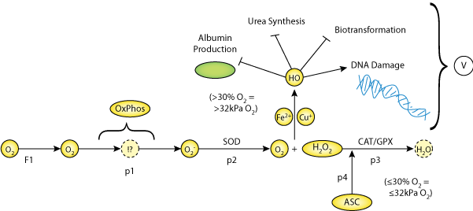

This CellML model will run in OpenCell but does not reproduce published results. This is the 20% Oxygen version, two more versions to follow.
Our small-scale bioreactor with a gas-permeable membrane has previously been shown to allow direct oxygenation of primary hepatocytes in collagenous sandwich cultures. In this work the applicability of this system for studying the response of hepatocytes to different ambient oxygen concentrations above the normoxic situation and the effect of the antioxidant vitamin C (ASC) on hepatocyte functionality in different oxygen cultures were evaluated. Determination of the parameters for functional levels (albumin and urea synthesis, biotransformation) combined with the model calculation of these parameters using a product inhibition model based on the concentration of hydrogen peroxide (H2 O2) indicated a relevance of oxygen levels for the maintenance of hepatic-specific functions. A model for the dynamics of oxidative stress was proposed to predict the time course of the qualitative concentrations of H2 O2 and the superoxide radical (O2 • − ) in different oxygen cultures. The 20% and 30% O2 cultures exhibited similar differentiated hepatic functions that were unequivocally lost in the 40% O2 cultures apparently due to oxidative damage. Metabolic functions in the 20% and 30% O2 cultures could be improved by ASC. These findings suggest that our bioreactor model not only allows a prediction of the liver response to variations in oxygen environments, but also serves as an in vitro tool to screen new compounds for antioxidant capacity.
The original paper reference is cited below:
'Improvement of metabolic performance of primary hepatocytes in hyperoxic cultures by vitamin C in a novel small-scale bioreactor, Stephanie Schmitmeier, Angelika Langsch, Wolfgang Schmidt-Heck, Inka Jasmund, Augustinus Bader 2007 Journal of Membrane Science, 298, 30-40.
|  |
| Image illustrating model 'Improvement of metabolic performance of primary hepatocytes in hyperoxic cultures by vitamin C in a novel small-scale bioreactor ' |